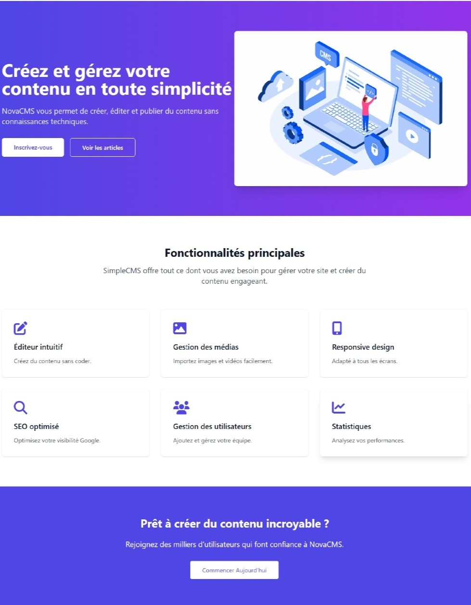
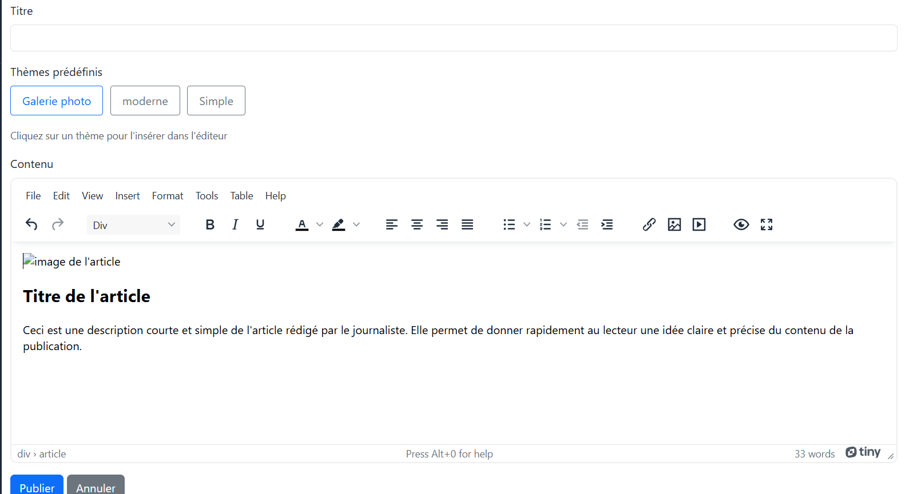
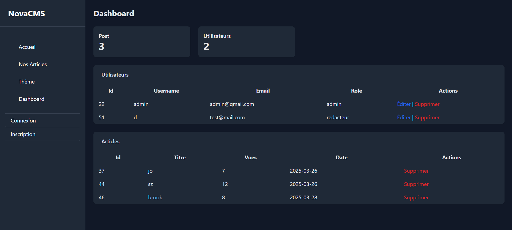

×

Maquette du projet CMS

Page d'accueil

Tableau de bord
Gestion d'articles

Dashboard
Description
Cette maquette présente l'interface du CMS, un système de gestion de contenu pour la création et publication d'articles. L'interface est conçue pour être intuitive et efficace pour les rédacteurs.
Les fonctionnalités incluent un éditeur WYSIWYG complet, la gestion des médias, la planification de publication, et des outils d'analyse de contenu pour optimiser l'engagement.